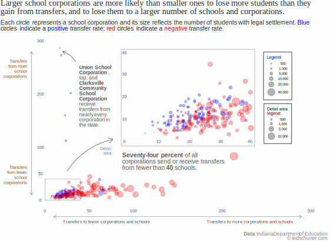

Exploring School Transfers Within Indiana's Primary and Secondary Public Schools
Choice Scholarship voucher program continues rapid growth but remains a small portion of overall enrollment.
Story and graphics by Ted Schurter
The number of transfers within Indiana’s schools has increased dramatically in the last few years even as overall enrollment has remained relatively stable. Indiana's Choice Scholarship program, where eligible families apply for taxpayer-funded vouchers to pay tuition at private, often parochial, schools, surged 31% in the 2023-2024 school year, accounting for one of every three transfers out of Indiana public school corporations.
Introduced in 2011 by then-governor Mitch Daniels as an escape route for students in underperforming public schools, the Choice Scholarship program was the largest school voucher program nationally, and statutorily capped at 7,500 students. Since then, the program has grown as successive state legislatures eroded eligibility requirements down to their current level: students must be between five and 21 years-old with legal settlement in Indiana and a family income of up to 400% of the amount to qualify for the federal free or reduced lunch program. That equates to $230,880 for a family of four in 2024, well above the state’s $66,785 median household income.
Transfers have grown from 12% to 18% of total enrollment - the combined enrollment of private and public schools - since 2018. In that time, Choice Scholarship transfers increased from 25% to 33% of all transfers.
While the annual changes in transfer totals have remained positive, changes in private, public and total enrollment have fluctuated between growth and decline. Private enrollment, which includes all private schools, dipped dramatically following Covid but rebounded strongly and maintained positive growth thanks to the flood of new Choice Scholarship transfers. Its gains were enough to buffer the slight recent losses in public enrollment and keep total enrollment in positive territory.
Understanding school transfers
School-age children in Indiana are entitled to a free public education in the school corporation where they live, their school corporation of legal settlement. Unless they've previously enrolled in public school, home-school students and those who exclusively attend a private school are not included in the legal settlement tally.
In 2024, that count totaled just over a million students within 290 school corporations.
The number of students with legal settlement in a school corporation is constrained by how many students live within its borders. A school or school corporation's enrollment, the number of students attending classes, is more dynamic, fluctuating as students transfer in and out during biannual transfer windows.
Transfer students may move within their own corporation, going from one school to another, or to another school corporation, charter or Choice Scholarship school. The motivations behind each transfer can be as diverse as student personalities. Some seek a better school fit, different educational offerings, improved extra-curricular activities, or broader athletic opportunities. Some transfers accommodate the children of teachers who live and work in different school corporations, are the result of behavior or school disciplinary issues, or reflect a preference for religious education.
School corporations set their own policy regarding student transfers, and in some instances, permission must be granted from the school corporations involved.
Illustrating school transfers
Visualizing the transfers from a single school corporation can help clarify the movement and terminology involved.
Net transfers
More transfer students depart than arrive at six of ten Indiana school corporations, resulting in negative net transfers. On average (and excluding outliers), they receive students from 11 corporations while dispersing them to 32 corporations or schools. These corporations tend to be larger, with an average legal settlement of 3,000 students.
The average school corporation with a positive transfer rate (excluding outliers) receive and send students from 12 and 22 schools and corporations respectively. They tend to be smaller with an average legal settlement of about 1,200 students. There are 104 Indiana school corporations with positive net transfers.

Explore the transfer rates of Indiana's school corporations: Hover over a school corporation's name; click to see a corporation's net transfer chart.
Where transfers are most common
The presence of charter or Choice Scholarship schools within a corporation’s boundaries often influences its transfer rate. Corporations with more than one alternative are more likely to have a negative transfer rate. Larger corporations with many alternatives are generally located within larger communities and have the highest negative transfer rates.
Understanding the outliers
Unless they have a robust online program, most schools and corporations receive the majority of their transfers from nearby corporations. The average number of corporations schools and school corporations receive transfers from is 13.
Online schools attract students from well beyond their borders if they have them at all. The corporations attracting students from the highest number of corporations all have robust online programs. Many have businesses partners that provide the expertise and infrastructure necessary to both attract and educate students online. The companies benefit from the dollars that follow those students to school.
K12 Inc. is one such business. Among its many clients nationwide are 10 Indiana schools and corporations, including three of the four school corporations that attract transfers from the most corporations: Union School Corporation, Indiana Connections Academy, and Clarksville Community School Corporation. Each of those schools attract students from at least 94% of Indiana school corporations.
Explore incoming and outgoing transfers
The motivations behind student transfers are often opaque to outsiders. Their number and destinations, though, can be quantified. Some schools and corporations send or receive a regular stream of students from a neighboring corporation while others may sporadically send only a handful every few years.
Use the Outgoing Transfers map to view where students from the selected school corporation are transferring to, how many are transferring and how the school corporation of legal settlement test scores compare to those of the enrolled school.
To see from what corporations students to a selected school are transferring, use the Incoming Transfers map.
Select a school or school corporation from the drop-down menu on the left. Hover over circles for the school or school corporation name; click on circles to view chart.
Explore and download transfer data from 2018 to 2024.
Explore transfer data from 2018 to 2024. Filter by school corporation, enrolled school/school corporation, year and transfer type. Data can be downloaded as csv or xlsx file.
Methodology and notes
This project uses enrollment, facility, test score and transfer data published on the Indiana Department of Education data portal; it was current as of early June 2024.
School district boundary data comes from the US Census Bureau via the Tigris R package. School address data was converted to latitude and longitude using the Google Maps API via the ggmap R package.
School transfer data excludes out of state transfers.
Data cleaning, transformations and workflow available at the project repository.